How inference works: pandas, Polars and Spark
Inference reuses the preprocessing and model learned during training. The execution choice determines where those saved transformations run and which artifacts can be used. It does not fit a new imputer, scaler or model.
For a runnable starting point, use the Python SDK example for a bounded frame, or the Spark bundle example for distributed input. Install the model's recorded dependencies in each process that loads it.
flowchart LR
A["Saved artifact"] --> B{"Where does it run?"}
B --> C["score_pipeline or predict_local: one Python process"]
B --> D["predict_spark: native_features"]
B --> E["predict_spark: python_pipeline"]
B --> F["Bundle inference_mode: spark"]
D --> G["Spark workers: model on batches"]
E --> G
F --> GThe local path holds the whole frame in one process. The Spark paths keep the table distributed and run the fitted model on worker batches. Each path is explained below.
Run the local form first
Use Python 3.12 or newer and an activated virtual environment. Install with
uv pip install skyulf-core (or uv pip install -e ./skyulf-core from a
checkout). This complete example needs no Spark, MLflow or cloud connection:
from pathlib import Path
from tempfile import TemporaryDirectory
import numpy as np
import pandas as pd
from skyulf.data.dataset import SplitDataset
from skyulf.inference.fitted_pipeline import load_pipeline, save_pipeline
from skyulf.inference.pipeline_scoring import score_pipeline
from skyulf.pipeline import SkyulfPipeline
training = pd.DataFrame({"amount": [10.0, 30.0], "target": [100.0, 300.0]})
pipeline = SkyulfPipeline({
"preprocessing": [
{"name": "fill", "transformer": "SimpleImputer",
"params": {"columns": ["amount"], "strategy": "mean"}},
{"name": "scale", "transformer": "StandardScaler",
"params": {"columns": ["amount"]}},
],
"modeling": {"type": "linear_regression"},
})
pipeline.fit(SplitDataset(train=training, test=training.head(0)), target_column="target")
incoming = pd.DataFrame({"amount": [40.0, np.nan]})
with TemporaryDirectory() as temporary:
destination = Path(temporary) / "fitted_model"
save_pipeline(pipeline, destination)
artifact = load_pipeline(destination)
result = score_pipeline(incoming, artifact)
np.testing.assert_allclose(result["prediction"], [400.0, 200.0], atol=1e-12)
print(result.to_string(index=False))
There is no holdout here: the example verifies saved inference arithmetic, not model accuracy. The result is a pandas frame with predictions 400.0 and 200.0. The latter comes from the saved training mean, 20.0. See the quickstart for a held-out metric and the artifact guide for the portable representation.
What training saves

A fitted pipeline artifact keeps the complete SkyulfPipeline, its fit engine,
raw and model-feature schemas, dependency versions and content identities. Use
save_pipeline and load_pipeline from skyulf.inference.fitted_pipeline for
this format. score_pipeline from skyulf.inference.pipeline_scoring applies
saved project scoring rules as well as the fitted preprocessing and model.
An InferenceBundle uses a separate portable representation: features.json
contains supported learned preprocessing state, model.pkl contains the fitted
estimator, and manifest.json records schemas, versions and output contracts.
Its explicit native Spark appliers turn saved state into Spark expressions;
JSON does not translate arbitrary Python code into Spark code.
Both formats contain trusted model payloads. Load artifacts only from controlled producers. A checksum detects changed bytes; it does not make pickle safe.
The same learned transformation
For training values amount=[10.0, 30.0] and target=[100.0, 300.0], an imputer,
standard scaler and linear regressor can learn:
Fill missing amount with 20.
z = (amount - 20) / 10
prediction = 100 * z + 200
| Row key | New amount | After imputation | After scaling | Prediction |
|---|---|---|---|---|
| 101 | 40.0 | 40.0 | 2.0 | 400.0 |
| 102 | missing | 20.0 | 0.0 | 200.0 |
Supported execution paths reuse these same values. Workers do not compute a new mean per partition or train separate estimators. Floating-point comparisons use appropriate tolerances; universal bit-for-bit equality is not promised.
Whole-frame Python execution

score_pipeline(frame, artifact) handles a pandas or Polars frame in one Python
process. It validates the saved input contract and uses the recorded fit engine.
This can be a workstation, a Databricks driver, or a cloud job. Supply the entire
intended request within the configured row and byte budget.
The portable bundle API uses predict_local(frame, bundle) and returns a pandas
DataFrame. For input_stage="raw", it applies saved preprocessing first. A
features bundle expects already prepared model features and bypasses
preprocessing. Applying a scaler twice gives the wrong input; the API cannot
infer from numeric values whether a column has already been scaled.
These settings answer different questions:
| Setting | What it chooses | Example |
|---|---|---|
Workflow runtime |
Platform integration and source/sink availability | standalone for a general Python process; databricks for Databricks integration and UC Delta publication |
engine |
Saved/local DataFrame execution | pandas or polars; a fitted artifact records its training engine |
Bundle/SDK inference_mode |
Whole-frame scoring or certified distributed prediction | local or spark; the certified Spark route requires pandas |
Portable runner mode |
Where the portable FE executes | native_features or python_pipeline |
spark_udf_env_manager / MLflow env_manager |
How worker Python dependencies are provided | virtualenv restores an environment; local uses the installed worker environment |
SDK runtime accepts standalone, databricks or spark; select standalone
for a general Python workflow. Preflight rejects runtime="spark" because Spark
scoring uses a separate batch runner. A cloud driver can still run whole-frame Python
scoring. Conversely, a Spark table source does not by itself select distributed
model inference. The certified SDK Spark route also validates its registered
model, incremental UC source and Delta sink contract; use the
SDK and Bundle
guides for that complete setup.
env_manager="local" describes a dependency policy, not driver execution or
inference_mode="local". It requires the correct packages already installed
in workers. virtualenv needs an environment-restoration-capable compute
profile; validate that choice on the actual compute. Neither setting enables an
unsupported transformer or supplies missing group/history context.
Native Spark preprocessing and a Python model

predict_spark(..., mode="native_features") accepts a raw-input portable bundle:
- The driver checks supported transformations, schemas, versions and output contracts.
- Native Spark expressions apply the saved preprocessing state.
- Distributed checks validate unique, non-null row keys and row preservation.
- Worker iterators load the fitted model and predict on prepared feature batches.
- The result is a Spark DataFrame containing record keys and predictions.
The supported portable preprocessing chain is SimpleImputer mean/constant,
StandardScaler, or an empty chain. Regression and classification are supported;
classification returns probability columns in the saved class order and applies
the saved threshold decisions. Unsupported native steps fail explicitly.
The whole table remains distributed. Only worker batches become pandas/NumPy inputs; there is no implicit collection into a driver frame. Model-call batch size does not cap Arrow transport allocation or total worker memory. Install compatible dependencies on both driver and workers.
Prediction is lazy until a Spark action or sink write. Validation may execute separate distributed actions, returning bounded control results. Spark preserves key identity, not physical row order; downstream consumers join by keys.
Python preprocessing inside workers

predict_spark(..., mode="python_pipeline") applies the portable bundle's
supported preprocessing and model together within independent worker batches.
It has the same portable preprocessing scope and supports regression and
classification. Choosing this mode does not admit arbitrary fitted Python nodes.
A separate certified MLflow pyfunc path uses inspected pandas fitted-pipeline packages. Its admission rules include the exact fitted recipe, estimator, schema, source identity and worker environment. Its supported recipes differ from the portable bundle's native Spark appliers. Neither path silently falls back to collecting a distributed frame.
Rows, groups, windows and history
The required context is the other data needed at inference time:
| Context | Caller responsibility | Example |
|---|---|---|
row |
Supply the row and the saved model state | Imputation using a saved mean |
group |
Supply the complete intended current group | A callback subtracting the current request's group mean |
window |
Supply ordering and required prior/neighboring observations | Lag and rolling features |
global |
Preserve the intended complete request population | Population-dependent fallback or active deduplication |
unknown |
Inspect and validate the actual implementation | An undeclared custom callback |
A fitted GroupImputer is commonly row: training already saved the per-group
statistics and fallback. Looking up one row's group does not require the new
request to contain all members of that group. A callback recomputing the group
mean from incoming rows has a different contract.
Built-in lag/rolling steps in carry mode can use
score_pipeline_with_history(..., history_state=...), which returns predictions
and detached continuation state. The caller persists both atomically and controls
concurrent writers. Whole-frame scoring preserves the frame supplied by the
caller; it cannot discover missing group members or fetch earlier events.
See preprocessing diagnostics and context for a
runnable continuation example and the diagnostic's requires_context outcome.
A passing sample diagnostic does not authorize independent Spark partitions or single-row endpoint requests. Declared row context, supported serialization and the execution adapter's fitted-state checks are separate requirements.
Choosing an artifact and execution path
| Need | Entry point | Practical boundary |
|---|---|---|
| Bounded pandas/Polars pipeline scoring | score_pipeline |
Preserve required whole-frame context and the recorded fit engine |
| Continued built-in temporal history | score_pipeline_with_history |
Caller owns history storage and atomic publication |
| Portable bundle in one process | predict_local |
Supported portable state, raw or prepared-feature contract |
| Portable Spark inference | predict_spark |
Raw input, admitted portable preprocessing, keyed distributed output |
| Certified fitted pandas model on Spark | Bundle inference_mode="spark" |
Exact fitted recipe, model and worker environment must pass admission |
Existing SkyulfPipeline.save/load and backend .joblib files remain valid for
their original consumers. A backend artifact dictionary is not an
InferenceBundle; do not pass it directly to build_bundle. See
artifact formats and compatibility.
Scheduling, Delta publication, HTTP serving and SQL invocation are separate integration choices. Use the batch publication guide, MLflow packaging guide and Bundle guide for the corresponding contracts.
Check the boundary when results differ
Check the artifact's input stage, feature names/order/dtypes and recorded runtime first. Feeding prepared features to a raw-input artifact applies saved preprocessing twice. Re-fitting on a request learns different state. Splitting context-dependent rows across independent calls can change results even when the saved state is identical.
For Spark, validate identity keys and the exact admitted recipe before measuring throughput; compare output by key with a bounded reference. Batch row limits control model calls, while Arrow transport and loaded estimators consume their own memory. A schema error, missing dependency or unsupported fitted node needs correction at its own boundary; an execution-mode switch is not a universal fix.
Use context diagnostics to investigate sample batch/order differences, Spark setup for worker and identity rules, and MLflow registry to resolve a deployed model version.